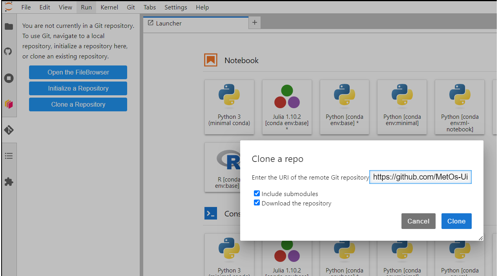
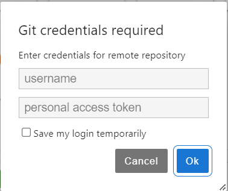
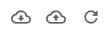

Starting with git on the jupyterhub#
Adding your git username and email#
First thing that you would want to do is to add your github username and email to the git config.
To do that, open a terminal (f.e. through launcher) and do:
git config --global user.name "<your_username>"
git config --global user.email "<your_email>"
You can check if the config is added by doing git config --get user.name.
Using git GUI extension:#
Jupyterlab includes a GUI to make it easier to use git. You can see a git icon on the left panel. To clone a repository, click on the icon and then on Clone Reopsitory. You should see the following prompt:
{kind=link}
Check both boxes and press Clone. You will get the following prompt:
{kind=link}
If you do not know what a personal access token is follow official github instructions to create one. Usually, the tokens start with ghp_***. Treat this token as a password.
Once you’ve logged in you will see in the file browser that a folder was created with the same name as the repo you have cloned.
Go into that folder in the file browser and then click on the git tab in the left panel. You will see the following:
{kind=link}
You can hover over different tabs and buttons too see what they do. If you click on History tab, you will see the beautiful graph of the commit-history of the branch you are currently on. You can clone multiple repositories and if you are in some repo folder within your file browser you can always click on the git icon to use version control for that specific repository.
Pulling and pushing and fetching are done using the cloud buttons  at the top right of the panel.
Using git CLI#
You can also use git within the command line.
To do that, Open a terminal through the Launcher. That will open the terminal at your current directory.
To see the absolute path of where are you at use pwd. Now, we will clone a repository that we use for the course (assuming you made a fork of it).
git clone <repository url> <folder>
cd <folder>
If the folder is not provided, the repository will be cloned into a folder with the same name as a repository.
Since we are using private repositories, you will get promoted to authenticate. Use your github username and token.
Once you are in the repo folder. You can create a new branch for a feature/piece of work you will be working on, so you can make a pull request to the upstream repo later.
To see what branch are you on right now and any changes you have made use git status.
git switch -c my-new-branch
git status
You will see that you just created a new branch and that you are up-to-date with it. Note, this branch is local and does not exist yet on github repo.
Now, suppose you made some changes to a file file.txt. You want to commit the changes and than push it to the remote (your repo on git hub). To commit your changes, you can add a single file, multiple files or all the changes.
#this will stage a single file
git add file.txt
#this will stage multiple files
git add file1.txt file2.txt ...
To commit the files you have staged:
git commit -m "commit-message, changed file.txt"
You can commit all the changes at once:
git commit -a -m "changed bunch of stuff"
Once you’ve made commits, you want to push them to the remote repository:
#--set-upstream origin my-new-branch is only needed once
# for every newly created branch to push it along with commits.
git push --set-upstream origin my-new-branch
# after that you can just simply do:
git push
To pull changes from the remote to your local repo use git pull. To get updated history (branches, tags etc) from the remote use git fetch -a.